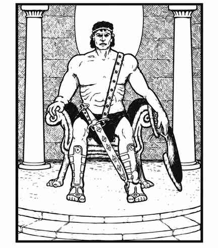

泰坦 · Titan

|
泰坦通常生活在物质位面之上的某个位面，偶尔会来到物质位面停留一段时间。长期居住在物质位面的泰坦会拥有上表所示的财宝。
泰坦的护甲等级和生命骰由 1d6 决定：1 为护甲 2、17 骰；2 为护甲 1、18 骰；3 为护甲 0、19 骰；4 为护甲 −1、20 骰；5 为护甲 −2、21 骰；6 为护甲 −3、22 骰。只有 17 或 18 骰的泰坦移动 21 寸；21 或 22 骰的泰坦每次攻击造成 8–48 点伤害。
泰坦可随意隐形，每天还能悬浮和／或变为以太状态两次。所有泰坦都能施展魔法师和牧师的四至七环法术。确定某只泰坦拥有多少级法术能力时，掷 1d4 并加 3；每个可用等级在每一类法术中各有 2 个法术，因此魔法师和牧师法术的最低数量都是 8 个（每类的一至四环各 2 个）。若未预先准备具体泰坦的法术，可从法术表中随机决定。泰坦对守序邪恶生物的防邪法术效果为正常两倍。
所有泰坦至少拥有 8 种牧师型灵能能力。掷 2d6 并加 6 确定能力总数（忽略悬浮能力）；灵能强度为百分骰结果加 100，所有能力均以七级掌握度使用。灵能攻击对泰坦无效。
泰坦除了自己的语言外，还会说巨人族六种方言、通用语和混乱善良阵营语言。由于性格倾向，它们与风暴巨人关系非常友好；每次遭遇一只泰坦，有 20% 概率伴随一名风暴巨人。
泰坦外貌很像人类，但体格强健、相貌英俊、没有面部毛发，服饰和护甲呈希腊式风格。